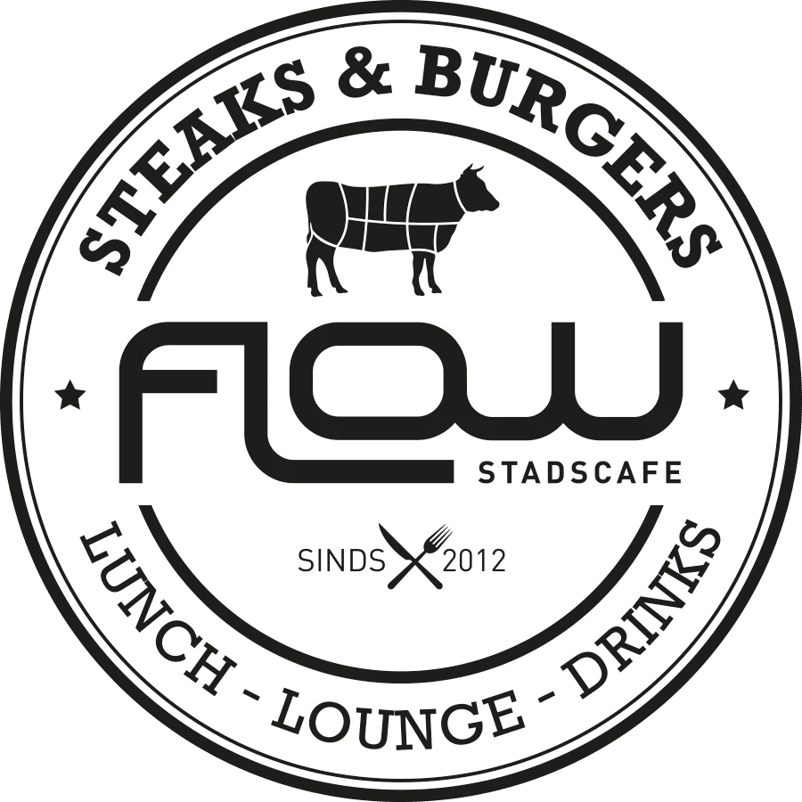
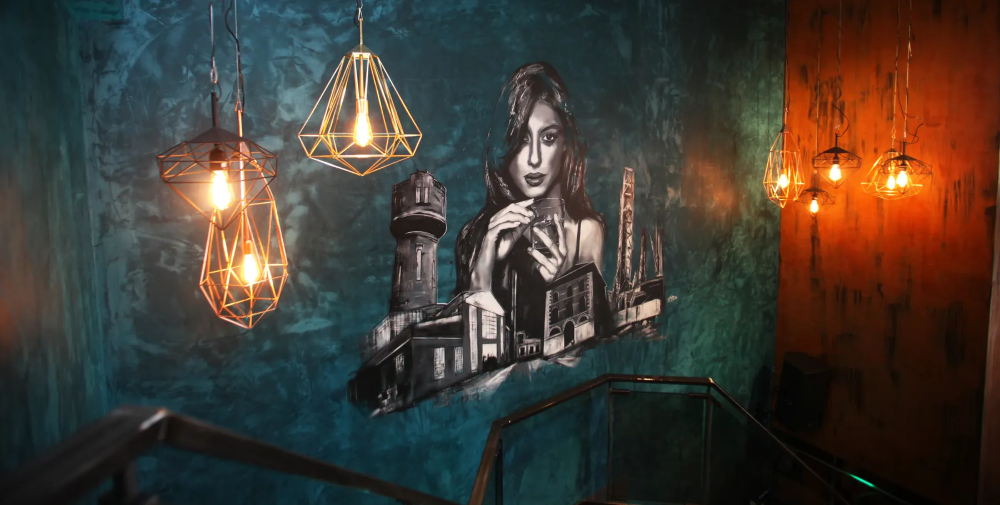
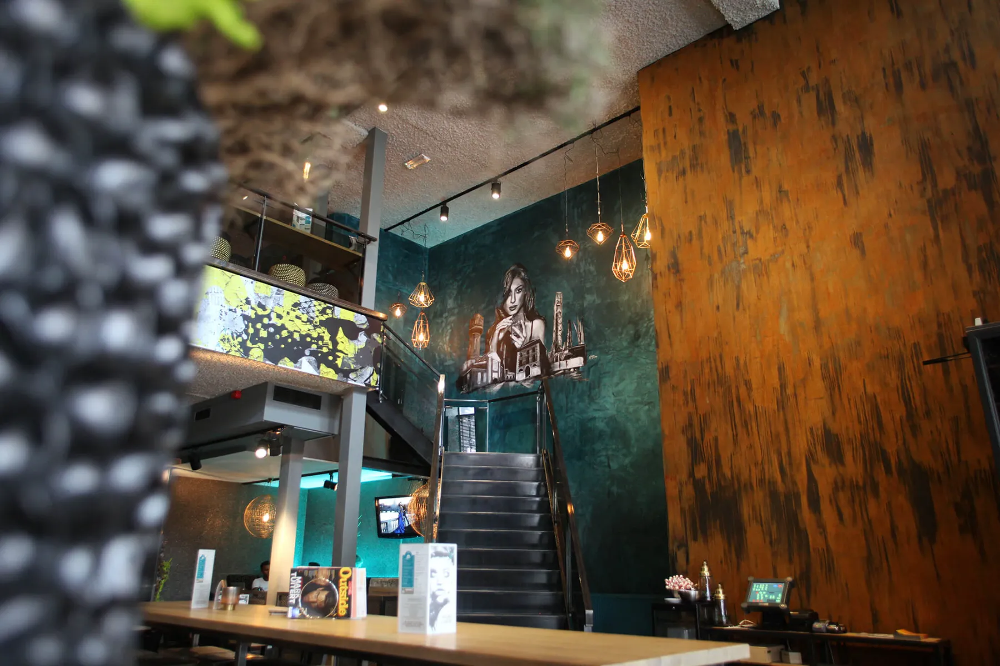
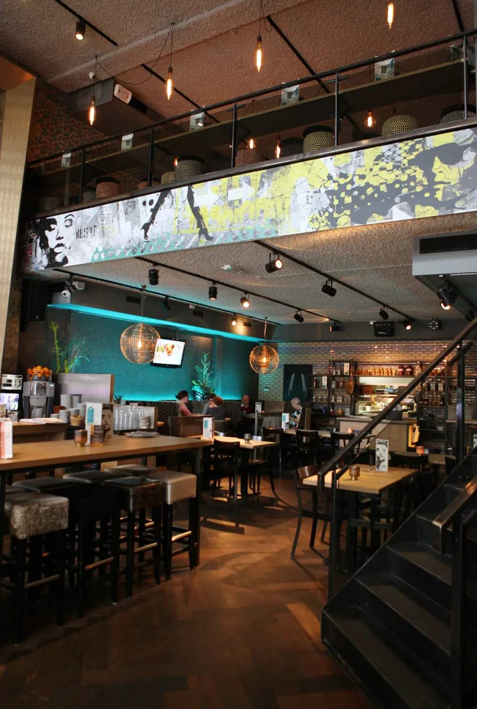
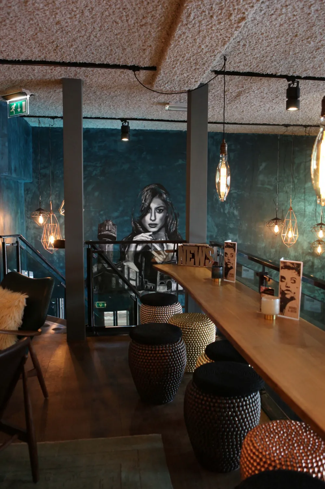
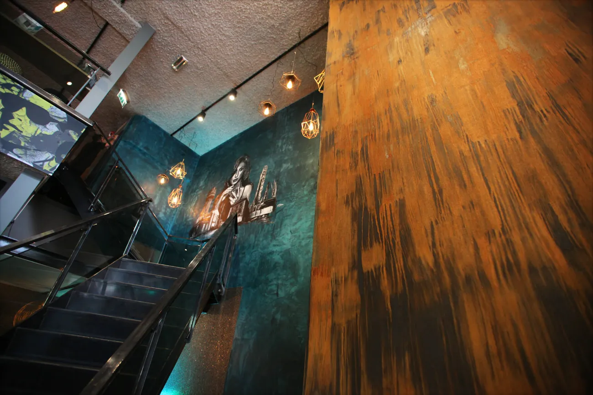
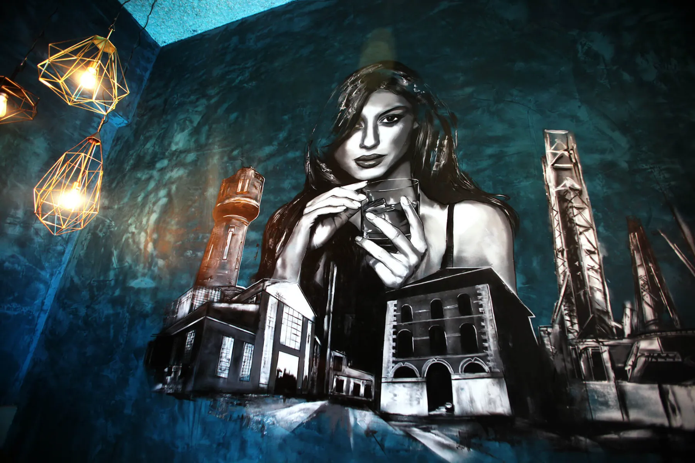

Maandag
Beer & burgers 18
Flow Burger of Crunchy Chicken Burger of Pulled Pork Burger of Pulled Jackfruit Burger, met een glas Hertog Jan, frites en Flowdip.

Flow Reserveer
Lunch, diner, een mooi glas wijn met een hapje en in het weekend een DJ. Elke dag open vanaf 10.00 uur, in de Beatrixstraat sinds 2012.
In de Beatrixstraat zit sinds 2012 ons gezellige stadscafé. We zijn elke dag vanaf 10.00 uur open en er is altijd iets te doen. U bent van harte welkom voor een lekker kopje Lavazza koffie, lunch, diner of een mooi glas wijn met een hapje.
Vrijdag en zaterdag zijn we open tot 01.00 uur en draait een DJ lekkere muziek. Natuurlijk altijd gratis entree.
Wij hopen u binnenkort te mogen verwelkomen! Team Flow


27, 28 & 29 november
Drie dagen een speciale wildkaart, naast onze gewone kaart.
De smaak van onze steaks komt medium-rare bereid op onze houtskooloven het best tot zijn recht.
Onze keuken is geopend van 10.30 tot 21.30 uur. De lunchkaart serveren wij van 10.30 tot 17.00 uur, de dinerkaart van 17.00 tot 21.30 uur en het late evening menu tot een uur voor sluitingstijd.
Heeft u een allergie of intolerantie? Laat het ons weten en vraag één van onze collega’s naar de allergenenkaart.
Maandag
Flow Burger of Crunchy Chicken Burger of Pulled Pork Burger of Pulled Jackfruit Burger, met een glas Hertog Jan, frites en Flowdip.
Dinsdag
Met frites, home-made slaw en Flowdip.
Zondag, 10.30 tot 13.00
Begin je zondag heerlijk ontspannen met een lekker ontbijtje. Heerlijk rustig alleen of met je familie of vrienden!

Alleen op reservering, vanaf 2 personen
Gezellig samen met vrienden, familie of collega’s genieten! Beginnen met een tomatensoepje en een warm kaasbroodje en daarna genieten van heerlijke zoete en hartige lekkernijen, scones met clotted cream, jam en lemon curd en onbeperkt thee van Teabar met verse munt en honing.
Extra feestelijk met een lekker glaasje bubbels? Kan natuurlijk ook. We serveren de high tea tussen 11.00 en 16.00 uur. Heb je een voedselallergie of -intolerantie? We houden er graag rekening mee als je het ons 2 dagen van tevoren laat weten.

Alleen op reservering, vanaf 2 personen
Lekkere hapjes voor bij de borrel, tussen 11.30 en 21.30 uur:
High tea en Flow bites reserveert u via info@stadscafeflow.nl of 0223 - 747 800.
Voor ieder gezelschap kunnen we een passend keuzemenu maken. We hebben 3 standaard menu’s, maar kunnen deze altijd naar uw wens uitbreiden of aanpassen. Heeft u een voedselallergie? Vertel het ons, dan houden wij hier rekening mee.
Bel voor een offerte: 0223 - 747 800, of mail naar info@stadscafeflow.nl.

Dan draait er een DJ lekkere muziek. Natuurlijk altijd gratis entree.
Naar de cocktailsEen kadobon is een origineel en leuk kado om te geven en nog leuker om te krijgen! De waarde kun je natuurlijk zelf bepalen en de kadobon kan worden besteed voor een lekkere lunch, diner, high tea, Flow bites of een heerlijk avondje uit.
Kadobon bestellenBij het reserveren van een tafel reserveert u een plekje binnen in ons gezellige restaurant. Is het op de dag zelf mooi weer, dan kunt u, als er plek is, natuurlijk ook een plekje buiten uitkiezen. Reserveren voor het terras is helaas niet mogelijk.
Reserveert u voor vandaag? Dat kan uitsluitend telefonisch.
Bel 0223 - 747 800Uw reservering is pas definitief als u van ons een bevestiging heeft gekregen. Onze bevestigingen komen soms in de spambox terecht: kijk daar dus ook even.
Voor meer informatie of reserveren kunt u ons bellen, mailen of gezellig even langskomen.
Stadscafé Flow